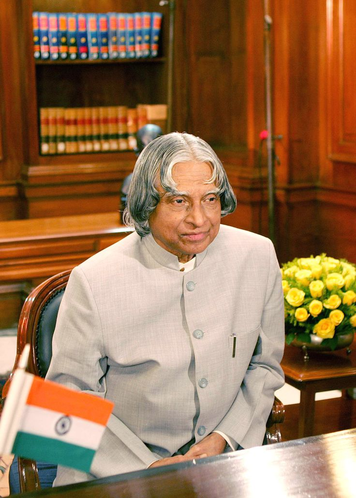

DR. A.P.J ABDUL KALAAM
1931-2015
Missile Man Of India
Dr. APJ Abdul Kalam remains in the hearts of the Indian people as both the Missile Man of India and the People’s President. Born on 15th October 1931, in Rameswaram, Tamil Nadu, he served as the President of India from 2002 to 2007. His full name was Avul Pakir Jainulabdeen Abdul Kalam. His father’s name was Jainulabudeen, and his mother’s name was Ashiamma. He was a notable scientist who contributed towards the betterment of the nation through numerous innovations.
Biographies
Eternal Quest: Life and Times of Dr Kalam by S Chandra; Pentagon Publishers.
President A.P.J Abdul Kalam by R K Pruthi; Anmol Publications, 2002.
A P J Abdul Kalam: The Visionary of India by K Bhushan, G Katyal; A P H Pub Corp, 2002.
A Little Dream (documentary film) by P. Dhanapal; Minveli Media Works Private Limited, 2008.
The Kalam Effect: My Years with the President by P M Nair; Harper Collins, 2008.
My Days With Mahatma Abdul Kalam by F A K George; Novel Corporation, 2009.
A.P.J. Abdul Kalam: A Life by Arun Tiwari; Harper Collins, 2015.